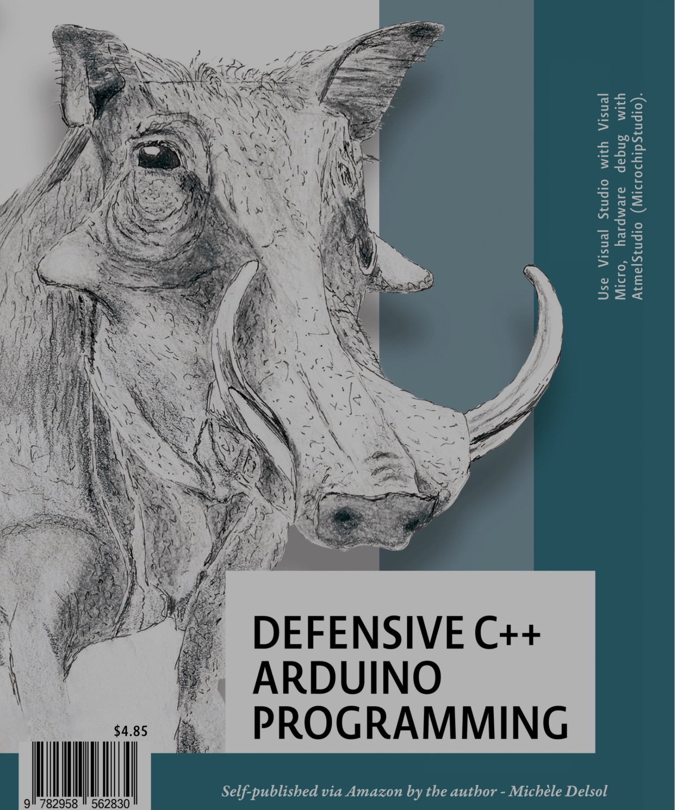
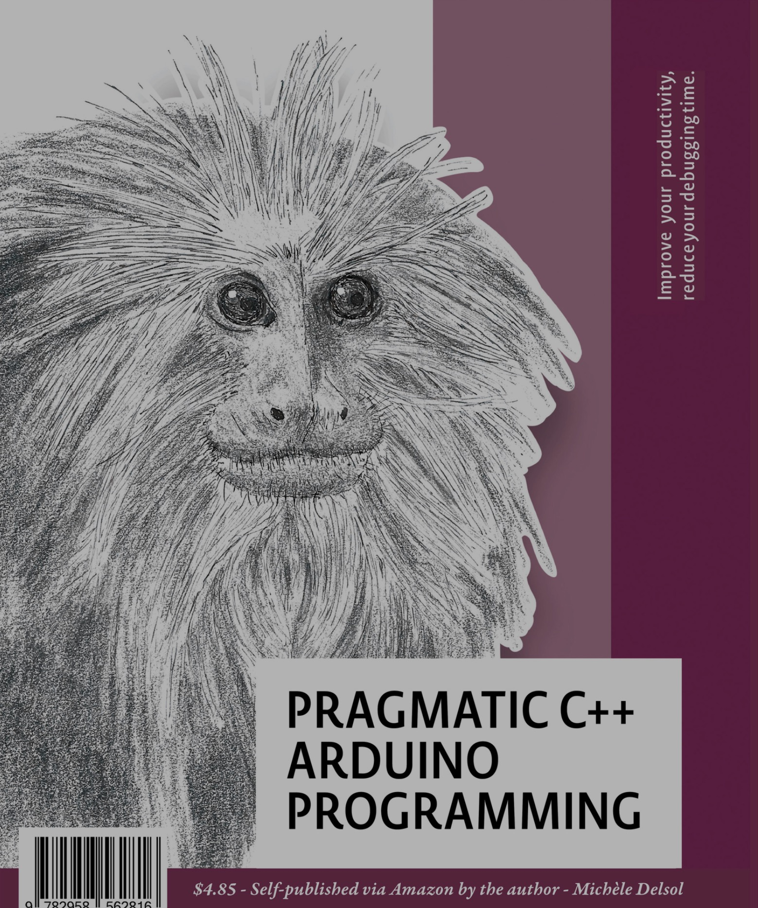
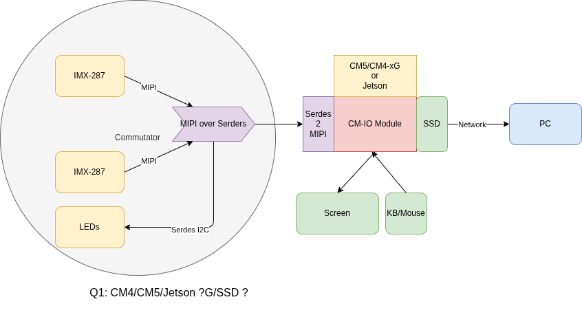
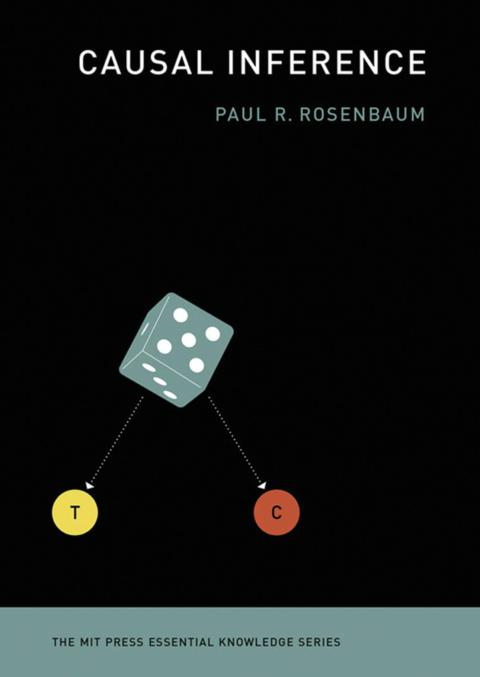
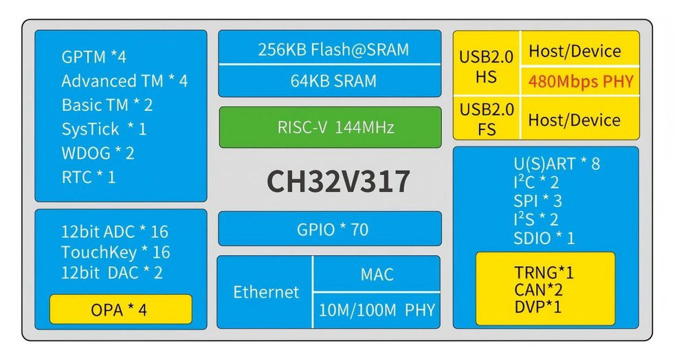
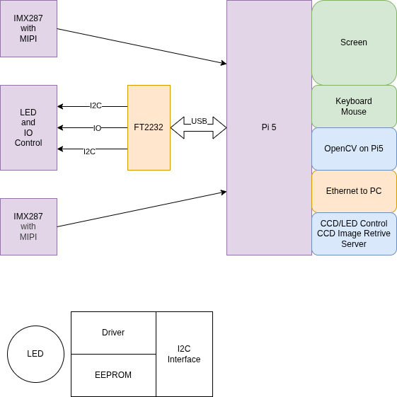
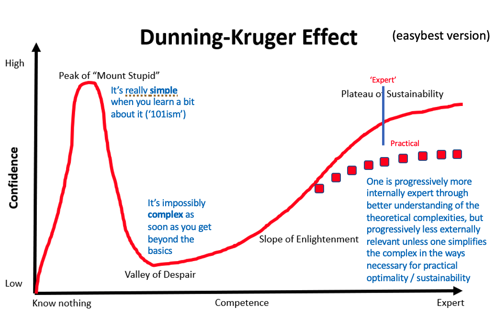
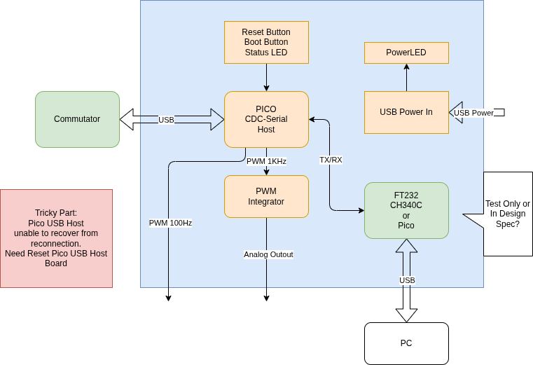
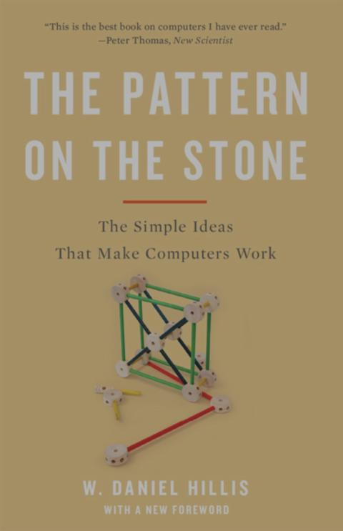
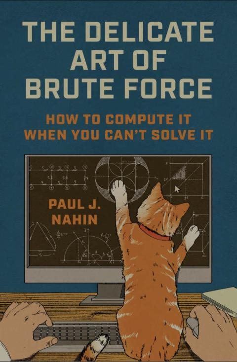

2026-03
2026-03-31 Tuesday 🌐 🎬 💾 📚 📑 🔬
教宗良十四世痛批伊朗戰爭：雙手「沾血者」祈禱無效 呼籲立即停火
西班牙防長：對涉及伊朗戰事美國飛機關閉領空
Money <- Value <- Exchange Value <- Use Value
Dell 3560 Notebook work under Ubuntu 20.04
Ubuntu 24.04 Very Slow
Ubuntu 22.04 Unable to Boot.
2026-03-30 Monday 🌐 🎬 💾 📚 📑 🔬
PIO vs BIO
PIO:
- CISC architecture
- Rich set of configurable options with each instruction
- Cycle-counting is easy, allowing for hand-crafted bit-bang waveforms and deterministic response times
- Small instruction memory, shared by all four cores
- Optimized for each core implementing a different function
- Larger logic area
- Lower clock rate, but guaranteed IPC of 1
- Custom tooling, no compiler (afaik)
- Closed source, may be encumbered by at least one patent
BIO:
- RISC architecture
- Primitive operations in each instruction: requires several instructions to match a single PIO instruction
- Cycle counting is harder, but deterministic, real-time performance is facilitated with stallable registers
- ISA extensions for direct inter-core communication with FIFOs
- Larger instruction memory, private to each core
- Optimized for multiple cores collaborating to improve performance; or, each core implementing a different function but at a lower speed
- Smaller logic area
- Higher clock rate, but IPC in the range of 0.2-0.33 (could be improved by using more logic area)
- Leverages standard tooling for RV32E, including compilers, assemblers, macros, debuggers, etc.
- Open source, patent-free
PICO Z80 Emulator
伊朗的策略
下駟對上駟 無人機對防空飛彈
中駟對下駟 導彈對失去雷達的防空系統
上駟對中駟 伊朗的天然地理對地面部隊
📑田忌賽馬
軔性耐打是對抗巨大武力的唯一方法
打擊是最佳的防守
Chernobyl Fungus Seems to Have Evolved an Incredible Ability
📑Chernobyl Fungus Seems to Have Evolved an Incredible Ability
Marx’s Capital Volume 1, With Paul North
🎬Marx’s Capital Volume 1, With Paul North
2026-03-26 Friday 🌐 🎬 💾 📚 📑 🔬
公司春酒 在 板橋希爾頓
2026-03-25 Thursday 🌐 🎬 💾 📚 📑 🔬
An Affordable, High-Bandwidth, Real-Time Sampling USB Oscilloscope


Functional Specification Document
🌐Functional Specification Document
AI-Driven ESP32 Workflow (Spec → Code → Test) using Claude Code
🎬AI-Driven ESP32 Workflow (Spec → Code → Test) using Claude Code
伊朗五條件
-
敵方的「侵略與暗殺」行動必須全面停止。
-
建立具體機制，確保戰爭不會再次對伊斯蘭共和國發動。
-
保證並明確定義戰爭損害賠償與賠款的支付方式。
-
全面結束所有戰線的軍事行動，並終結捲入這場戰爭的所有區域性反抗團體(resistance groups)。
-
伊朗對荷姆茲海峽行使主權，現在是、未來也會是伊朗天然且合法的權利；這是另一方履行承諾的保證，必須獲得國際認可。
2026-03-25 Wednesday 🌐 🎬 💾 📚 📑 🔬
2026-03-24 Tuesday 🌐 🎬 💾 📚 📑 🔬
川普團隊信用太差 沒人會信 哈哈哈
TMC2132 EMI Solution


It is in the data sheet.
2026-03-23 Monday 🌐 🎬 💾 📚 📑 🔬
Fix STM32 BNO055 diff from PICO BNO055
2026-03-20 Friday 🌐 🎬 💾 📚 📑 🔬
Every One Select Your Successor Down to 7 Level
計算兩個角度之間的最小角度差（Delta Angle）
((angleNow - anglePrevious) + 3*PI)%(2*PI) - PI
計算兩個角度之間的最小角度差（Delta Angle），並處理了角度環繞（Angle Wrapping）的問題。
以下是它的運作邏輯：
相減：計算當前角度與前一次角度的差值。
位移 (+ 3 * Math.PI)：將差值往正向偏移，確保後續取餘數時處理的是正數空間。
取模 (% 2 * Math.PI)：將角度限制在到 0 to 2*PI的範圍內。
修正回正負區間 (- Math.PI)：將範圍平移回 -PI 到 PI 之間。
結果：
它會回傳一個介於（-180°）到 （180°）之間的數值。
這在處理旋轉邏輯（例如角色轉向或相機追蹤）時非常重要，能確保物體會往最短的路徑轉動，而不是繞一大圈。
Fan Noisy
Use tape to stop fan.
Use External Fan.
2026-03-19 Thuesday 🌐 🎬 💾 📚 📑 🔬
Open-Ephys Commutator Control from Bonsai
💾Use positional data to improve commutator precision
💾Replace quaternion to twist with new algorithm
3rd War : In Korean ?
ESP32-P4-Nano
Defensive C++ Arduino Programming

2026-018
I like reading stroy about C language.
Pragmatic C++ Arduino Programming

2026-017
PiBrick CM5
2026-03-18 Wednesday 🌐 🎬 💾 📚 📑 🔬
OpenClaw on Raspberry Pi
We Create our own Reality, from White House
Support Jacket 日本製外骨骼型輔助套裝(最強規格款)
🌐Support Jacket 日本製外骨骼型輔助套裝(最強規格款)
Joint Comprehensive Plan of Action
🌐Joint Comprehensive Plan of Action
Under the JCPOA, Iran agreed to constrain its nuclear program by limiting fuel cycle activities that could lead to the production of weapons-grade uranium or plutonium. The JCPOA restricted the number and type of centrifuges in operation, the level of uranium enrichment, and the size of Iran's enriched uranium stockpile. Key facilities at Fordow, Natanz and Arak were repurposed for civilian uses such as medical and industrial research. Iran agreed to accept more intrusive IAEA monitoring measures of its fuel-cycle related activities. In exchange for complying with these restrictions, Iran received relief from nuclear-related sanctions imposed by the United Nations, the EU, and the United States, but many U.S. sanctions unrelated to the nuclear issue—targeting Iran's missile program, support for militant groups, and human rights record—remained in place, limiting the economic effect of sanctions relief. The agreement also set a timetable to lift the UN arms embargo, contingent on Iran's continued compliance with civilian nuclear commitments.
The agreement took effect on 20 January 2016. It was criticized and opposed by Israel, Saudi Arabia, Iranian principlists, and some in the United States.
The United States withdrew from the pact in 2018, imposing sanctions under its maximum pressure campaign. In a symbolic response, members of Iran's Islamic Consultative Assembly burned the text of JCPOA in the Assembly.The sanctions applied to all countries and companies doing business with Iran and cut it off from the international financial system, rendering the nuclear deal's economic provisions null.On 18 October 2025, in the aftermath of the Twelve-Day War, Iran officially announced the termination of the agreement after 10 years.
「一美元拍賣」（Dollar Auction）
美以伊朗的戰爭是一場一美元拍賣 沒救了
就算美國退出依舊會持續供應武器給以色列
對於伊朗與黎巴嫩 以色列的策略就是 與加薩一樣
種族滅絕 完全的控制 (只是 控制只是幻覺)
有加薩前例 伊朗與黎巴嫩會放棄抵抗？
Some C Stuff
.h file
pin.h : store pin name define and hardware related constant
constant.h : store constant related to software
data.h : store software related general data structure
error.h : error code and error message
global.h : place to define global access variable
log.h : Macros about log
c naming convention
Variable start with Lowercase
Function, Enum, Class, Class start with Uppercases
Parameters start with underscore
Macro start with all uppercase with underscore between words
c others stuff
comment closing curly braces
variable suppose to have min and max
c function error handling
1st parameter is alwasy *error
setjmp longjmp 用法
#include <stdio.h>
#include <setjmp.h>
jmp_buf buf;
void nested_function() {
printf("在深層函數中，發生錯誤...\n");
longjmp(buf, 1); // 跳回到 setjmp 處，並傳回 1
printf("這行不會被執行\n");
}
int main() {
// 1. 設定跳轉點
if (setjmp(buf) == 0) {
printf("準備呼叫深層函數\n");
nested_function();
} else {
// 2. 當從 longjmp 跳回時
printf("已從錯誤中恢復\n");
}
return 0;
}
C Header File Example
// 1. Include Guards (Essential to prevent multiple inclusions)
#ifndef MY_HEADER_H
#define MY_HEADER_H
// 2. Includes (Only necessary ones, like standard types)
#include <stdint.h>
// 3. Macros and Constants
#define MAX_BUFFER 1024
// 4. Data Type Definitions (Structures, Enums, Typedefs)
typedef struct {
int id;
char name[20];
} User;
// 5. Function Prototypes (Public interface)
void ProcessUser(User* u);
int GetStatus(void);
// 6. External Global Variables (If shared)
extern int globalConfig;
#endif // MY_HEADER_H
2026-03-17 Tuesday 🌐 🎬 💾 📚 📑 🔬
Configuring Your Pi for I2C
sudo apt-get install python-smbus sudo apt-get install i2c-tools
import smbus
import time
# 初始化 I2C 匯流排 (1代表 Raspberry Pi B+, 2B, 3B, 4B)
bus = smbus.SMBus(1)
# 裝置的 I2C 地址
address = 0x70
# 讀取資料範例
data = bus.read_byte_data(address, 0x00)
print(data)
Pi5-IMX287 Fiber Photometry

Ternay Computing
2026-03-16 Monday 🌐 🎬 💾 📚 📑 🔬
Angry Dr. Arthur Kachikian
🎬America's Final War | Dr. Arthur Kachikian
安全保障就是核武 而核武是滅絕的開始
Open-CV on RPI
📚Configuring Raspberry Pi for OpenCV
sudo apt install -y v4l-utils ffmpeg python3-opencv
import v4l2capture
import PIL.Image
import select
# Open the video device
video_device = "/dev/video0"
camera = v4l2capture.Video_device(video_device)
# Set resolution (width, height)
width, height = 1280, 720
size_x, size_y = camera.set_format(width, height)
# Start streaming
camera.start()
# Wait for the device to fill the buffer
select.select((camera,), (), ())
# Capture a frame
image_data = camera.read()
# Close the device
camera.close()
# Convert raw data to image using PIL
image = PIL.Image.frombytes("RGB", (size_x, size_y), image_data)
image.save("capture.jpg")
print(f"Image saved as capture.jpg, Size: {size_x}x{size_y}")
Causal Inference

2026-016
Lab-On-a-Chip Grippers Could Handle Human Cells Researchers design shape-memory cages to grab cells and organoids
Now, researchers have developed a lab-on-chip that adds a new feature to these systems: low-power grippers that can hold cells or tiny organ models called organoids in place. The CMOS-compatible lab-on-a-chip features shape-memory grippers and chemical sensors for detecting molecules such as neurotransmitters. The micro-cage array was presented in San Francisco on 18 February at the IEEE International Solid State Circuits Conference.
Current Opinion on Animal Pose Estimation and Behavior Analysis Tools
Current Opinion on Animal Pose Estimation and Behavior Analysis Tools
how to setup mv-mipi-imx287m on rpi zero 2w?
📚how to setup mv-mipi-imx287m on rpi zero 2w?
📚Raspberry Pi 5 IMX264 + IMX287
#!/bin/bash
set -ex
cd ~/
rm -rf raspberry*
wget https://github.com/veyeimaging/raspberrypi_v4l2/releases/latest/download/raspberrypi_v4l2.tgz
tar xzf raspberrypi_v4l2.tgz
# build driver
cd ~/raspberrypi_v4l2/driver_source/cam_drv_src/rpi-6.6.y
make
# build dtbo
cd ~/raspberrypi_v4l2/driver_source/dts/rpi-6.6.y
./build_dtbo.sh
cd ~/raspberrypi_v4l2/release
# create bin dir for current kernel
mkdir -p driver_bin/$(uname -r)
cp ~/raspberrypi_v4l2/driver_source/cam_drv_src/rpi-6.6.y/*.ko driver_bin/$(uname -r)/
cp ~/raspberrypi_v4l2/driver_source/dts/rpi-6.6.y/*.dtbo driver_bin/$(uname -r)/
ls -l driver_bin/$(uname -r)/*.{ko,dtbo}
cd ~/raspberrypi_v4l2/release
chmod +x *.sh
yes no | ./uninstall_driver.sh veye_mvcam
sed -i 's/\/boot\/cmdline\.txt/\/boot\/firmware\/cmdline\.txt/g' install_driver.sh
yes | ./install_driver.sh veye_mvcam
朱子家訓
阿媽說： 一聲不知 百樣無事
阿公說： 還沒貧窮就習慣貧窮 就不會貧窮 還沒富裕就習慣富裕 就不會富裕
2026-03-12 Friday 🌐 🎬 💾 📚 📑 🔬
Shrike-lite Pico + FPGA
SimBA (Simple Behavioral Analysis)
💾SimBA (Simple Behavioral Analysis)

Truth is the First Casualty in the War Time
2026-03-12 Thursday 🌐 🎬 💾 📚 📑 🔬
Spec-Driven Development
🎬Coding is dead. Long live the software engineer.
💾Programming as Theory Building
🎤Programming as Theory Building
🌐Understanding Spec-Driven-Development: Kiro, spec-kit, and Tessl
One workflow to fit all sizes? Kiro and spec-kit provide one opinionated workflow each, but I’m quite sure that neither of them is suitable for the majority of real life coding problems. In particular, it’s not quite clear to me how they would cater to enough different problem sizes to be generally applicable.
When I asked Kiro to fix a small bug (it was the same one I used in the past to try Codex), it quickly became clear that the workflow was like using a sledgehammer to crack a nut. The requirements document turned this small bug into 4 “user stories” with a total of 16 acceptance criteria, including gems like “User story: As a developer, I want the transformation function to handle edge cases gracefully, so that the system remains robust when new category formats are introduced.”
I had a similar challenge when I used spec-kit, I wasn’t quite sure what size of problem to use it for. Available tutorials are usually based on creating an application from scratch, because that’s easiest for a tutorial. One of the use cases I ended up trying was a feature that would be a 3-5 point story on one of my past teams. The feature depended on a lot of code that was already there, it was supposed to build an overview modal that summarised a bunch of data from an existing dashboard. With the amount of steps spec-kit took, and the amount of markdown files it created for me to review, this again felt like overkill for the size of the problem. It was a bigger problem than the one I used with Kiro, but also a much more elaborate workflow. I never even finished the full implementation, but I think in the same time it took me to run and review the spec-kit results I could have implemented the feature with “plain” AI-assisted coding, and I would have felt much more in control.
An effective SDD tool would at the very least have to provide flexibility for a few different core workflows, for different sizes and types of changes.
CH32V317 board offers 10/100Mbps Ethernet, dual USB 2.0 Type-C, DVP interface


2026-03-11 Wednesday 🌐 🎬 💾 📚 📑 🔬
Linux Driver Workshop 2026
Netanyahu , Putin are War Criminals, Trump is just Jaws (also War Criminal)
2026-03-10 Tuesday 🌐 🎬 💾 📚 📑 🔬
PicoCalc Arduino Startup Code
🎬PicoCalc Arduino Startup Code
Dragon's Dogma 2 Game Play All
The Causal Mindset Handbook
2026-015
ICM-20948 Sensor Fusion
Brain Emulation
🌐How the Eon Team Produced a Virtual Embodied Fly
SqueakPose Studio
Desktop labeling, training, and inference toolkit for small-animal (mouse) pose estimation. Built with PyQt6 and Ultralytics YOLO to streamline the full loop: annotate frames, export YOLO-format datasets, train models, and run video inference with per-frame CSV outputs.
🎬SqueakView Studio: Install, Demo, Key Features
SLEAP Open Source GUI for Multi-Animal Pose Tracking
🌐SLEAP Open Source GUI for Multi-Animal Pose Tracking
2026-03-09 Monday 🌐 🎬 💾 📚 📑 🔬
當一個團隊只有一言堂 那就毁了
human and computer do not have the same memory system
💀 Netanyahu say, Unleash Trump, Unleash US Marine
2026-03-06 Friday 🌐 🎬 💾 📚 📑 🔬
Mouse Temperature
Mouse surface temperatures, often measured via infrared thermography for non-invasive monitoring, typically range between 35.4 ~ 37.9
Infrared thermal image tracking-based measuring and experimental system for unbiased animal behaviors
有專利
Far infrared thermal sensor array (32x24 RES) MLX90640
2026-03-05 🌐 🎬 💾 📚 📑 🔬
BNO085
The BNO085 by the motion sensing experts at Hillcrest Laboratories takes the familiar 3-axis accelerometers, gyroscopes, and magnetometers and packages then alongside an Arm Cortex M0 processor running Hillcrest's SH-2 firmware that handles the work of reading the sensors, fusing the measurements into data that you can use directly, and packaging that data and delivering it to you. If the name and description of the BNO085 sounds strikingly similar to those of the BNO055 by Bosch Sensortec, there is a good reason why: they're the same thing, but also they're not. Thanks to a unique agreement between Bosch and Hillcrest, the BNO085 uses the same hardware as the BNO055 but very different firmware running on it.
DSP-RTL-Lib
FastAccelStepper
2026-03-04 🌐 🎬 💾 📚 📑 🔬
VL53L9CX
The VL53L9CX is STMicroelectronics’ dToF 3D lidar all-in-one module, offering a high spatial resolution of 2.3 K zones. It features a 71° diagonal FoV, with 1° angular resolution across a 55° x 42° FoV. It also delivers accurate ranging from below 5 cm to 9 m.
VL53L7CX Time-of-Flight (ToF) 8x8 multizone ranging sensor
Specially designed for applications requiring an ultrawide FoV, the VL53L7CX Time-of-Flight sensor offers a 90° diagonal FoV. Based on ST's FlightSense technology, the VL53L7CX incorporates an efficient metasurface lens (DOE) placed on the laser emitter enabling the projection of a 60° x 60° square FoV onto the scene.
Its multizone capability provides a matrix of 8x8 zones (64 zones) and can work at fast speeds (60 Hz) up to 350 cm.
📚VL53L7CX Time-of-Flight 8×8-Zone Wide FOV Distance Sensor
💾SparkFun_VL53L5CX_Arduino_Library
With Python Viewer
Infrared Array Sensor Grid-EYE
🌐Infrared Array Sensor Grid-EYE
🌐Thermopile Infrared Array Sensors
Fiber Photometry Use Sony IMX287

These biological computers actually use neurons
🎬These biological computers actually use neurons
In this video we look into one of the developing areas of computing: wetware. Most specifically neuromorphic computing, a science which uses actual neurons on chips.
We talk to Cortical labs, the company that developed the pong-playing dish brain, and professor Thomas Hartung to understand what the benefits of this technology are.
The war with Iran: An expert analysis
🎬The war with Iran: An expert analysis
What is happening in Iran and what does it mean for the region? Dr Evaleila Pesaran shares her analysis.
MIPI to USB3 Solution
🐱 川普不是有耐心的人 戰事應該短期就會消失
Causal Inference for The Brave and True
📚Causal Inference for The Brave and True
Machine Learning & Causal Inference: A Short Course
🎬Machine Learning & Causal Inference: A Short Course
Dunning-Kruger effect

PICO as USB Host

2026-03-03 🌐 🎬 💾 📚 📑 🔬
Using the ICM-20948 and the Madgwick Filter for Orientation Tracking
🌐Using the ICM-20948 and the Madgwick Filter for Orientation Tracking
Dasynq — the event-loop library
Dasynq — the event-loop library
Dasynq is an event loop library similar to libevent, libev and libuv.
- C++11 — written in portable C++ code
- Thread safe — full support for use in a multi-threaded application
- Header-only library — does not install a shared library
- Supports file I/O, signals, process termination and timer events
- Linux, OpenBSD, FreeBSD, MacOS — and portable to others
- Apache License version 2.0
Build a REAL RPI Pico Project in VSCode Now
The Pattern On the Stone

2026-014
The Delicate Art of Brute Force

2026-013
The Biological Computing
Real neurons applied to AI models
Living Human Brain Cells in CL1 Biological Computer Learn How to Play DOOM
🌐Brain Cells in CL1 Learn How to Play DOOM
Human brain cells grown in a lab have learned to play DOOM. Australia-based Cortical Labs put on this impressive display with their CL1 biological computer, which is a really cool device that cradles 200,000 living human neurons on a microchip topped with a multi-electrode array. These neurons, derived from stem cells, float in a nutrient solution and link directly to the chip’s electrodes, which send and receive electrical signals.
Scientists Grew Mini Brains, Then Trained Them to Solve an Engineering Problem
🌐Mini Brains Solve an Engineering Problem
2026-03-02 🌐 🎬 💾 📚 📑 🔬
JavaScript Run Time on MCU
A tiny JavaScript runtime for RP2040 and RP2350 (Raspberry Pi Pico)
Espruino for Raspberry PICO RPI2040
stm32js is a framework which gives you a way to write scripts for STM32 in JavaScript.